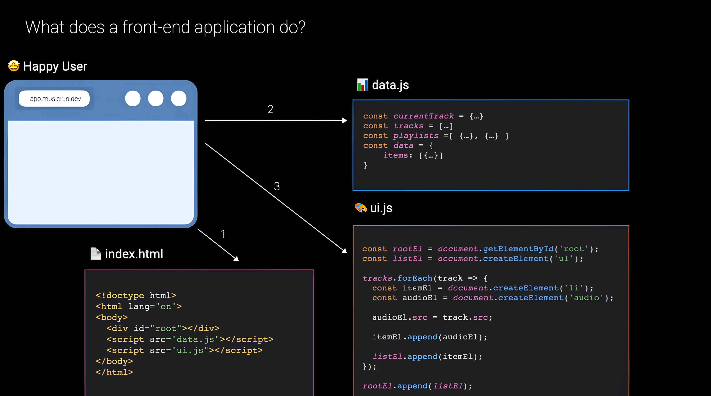
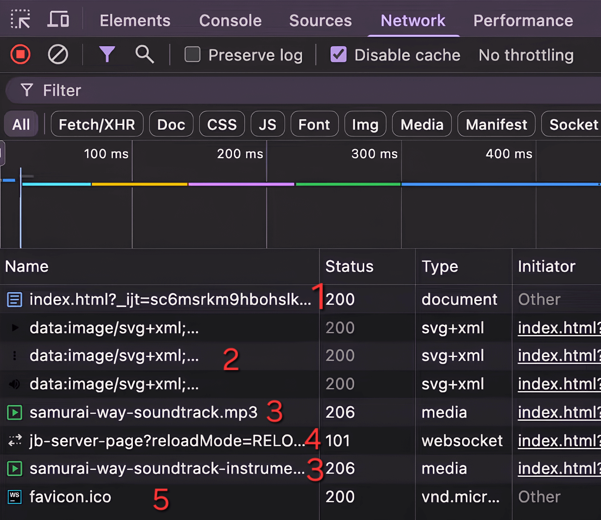
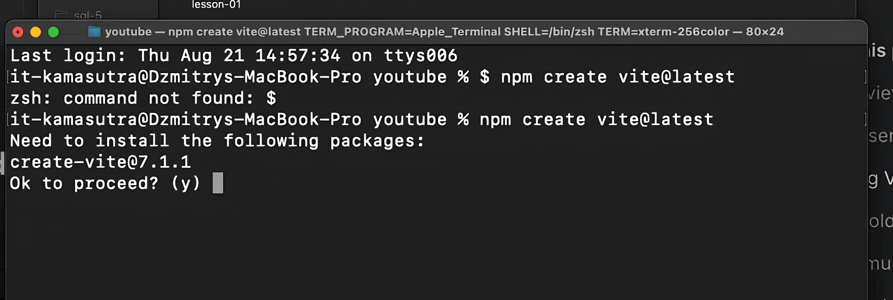
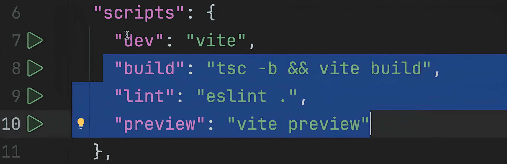
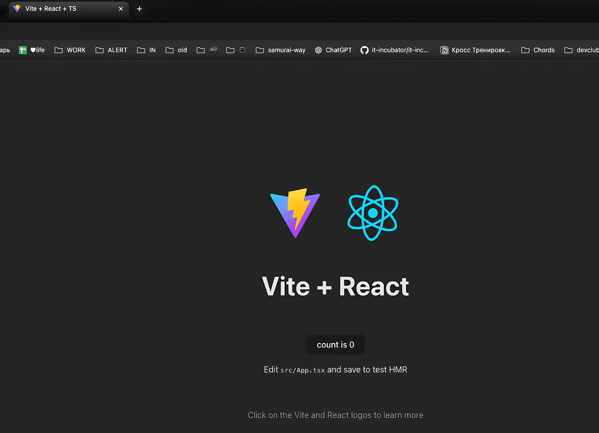

Samurai way. Vanilla front 02
-
Схема начала работы может быть представлена следующим образом:
- Пользователь открывает браузер.
- Вводит адрес сайта в адресной строке.
- Браузер через DNS определяет IP-адрес сервера и отправляет HTTP-запрос.
- Сервер по адресу понимает, какой файл нужно вернуть (например, index.html).
- HTML-файл загружается в браузер.
-
HTML как контейнер приложения
- В классическом сайте HTML содержит много тегов и статическую вёрстку.
- В современном frontend-приложении index.html — это контейнер, в котором оживает приложение на JavaScript.
- Внутри обычно есть: "div id="root">div" Этот элемент служит контейнером для всего приложения. Идентификатор может быть любым, но чаще всего — root, app или main. Без JavaScript страница выглядит «пустой» — приложение оживает только после загрузки JS-кода.
-
Декомпозиция приложения
JavaScript-код разделяется на два файла:
html
script src="data.js">/script
script src="ui.js">/script
- Работа с данными(Data.js) — бизнес-логика, хранение информации.
- Работа с отрисовкой(UI.js) — отвечает за отрисовку и визуализацию данных (UI). Такая декомпозиция помогает отделить логику от представления. В src указываем, откуда подгружать скрипт.
Парсинг HTML и DOM
Создаёт новые DOM-элементы. С помощью forEach пробегаемся по массиву треков и для каждого трека
выполняем последовательность действий:
Для браузера index.html — это просто текст. Он парсит(читает) текст скрипта, разбирает его на теги,
атрибуты и превращает их в DOM-дерево. DOM — это иерархия объектов, которая описывает структуру
документа. JS работает именно с DOM-объектами, а не с «тегами» как строками. Изменения в DOM
автоматически отображаются браузером.
DOM-дерево(Document Object Model) — это объектная модель документа, которая представляет все содержимое
страницы в виде объектов, которые можно добавлять,изменять, удалять.
Работа с данными (Data.js)
- Файл данных обычно содержит:
- Объекты
- Массивы
- Массивы объектов
const tracks = [
{ id: 1, title: "Song A", src: "song-a.mp3" },
{ id: 2, title: "Song B", src: "song-b.mp3" },
]
Работа с UI (UI.js)
- Загружается после Data.js.
- Не хранит данные, а отвечает только за их отрисовку.
- Ищет root-элемент по id:
const root = document.getElementById("root")
const listEl = document.createElement("ul") //создаём список (ul) треков.
tracks.forEach((track) => {
const itemEl = document.createElement("li") //создаём элемент списка (li) для трека.
const audioEl = document.createElement("audio") //создаём аудиоэлемент (audio)
audioEl.src = track.src //задаём src (адрес аудиофайла)
itemEl.appendChild(audioEl) //вставляем аудио в элемент списка
listEl.appendChild(itemEl) //вставляем список в элемент root
})
root.appendChild(listEl)
Практика с Vanilla JS

- Что такое localhost и порт
- localhost — особое доменное имя. Браузер понимает его как «обратись к самому себе». То есть запрос не идёт в интернет, а возвращается на этот же компьютер.
- Железным сервером в данном случае выступает сам ноутбук/ПК.
- Программным сервером выступает софт (WebStorm, Live Server и т.д.), который слушает определённый порт и отдаёт файлы.
-
Добавляем музыку 🎵 на нашу страницу
- В li вставляем тег audio.
- Тег audio отображается в браузере только если есть атрибут controls.
- В src указываем ссылку на .mp3 (из MusicFun API).
<ul>
<li>
<div>Musicfun soundtrack</div>
<audio controls src="https://musicfun.it-incubator.app/api/samurai-way-soundtrack.mp3"></audio>
</li>
<li>
<div>Musicfun soundtrack instrumental</div>
<audio
controls
src="https://musicfun.it-incubator.app/api/samurai-way-soundtrack-instrumental.mp3"
></audio>
</li>
</ul>
- Проверка в DevTools → Network
- Открываем вкладку Network (F12 → Network). Обновляем страницу:
- 1. Загружается наш index.html.
- 2. Подтягиваются встроенные картинки (дефолтные кнопки плеера).
- 3. Запрашиваются музыкальные файлы с сервера (.mp3). При первой подгрузке загружается только превью, а не весь трек. А уже при нажатии play загружается полный трек.
- 4. Устанавливается WebSocket-соединение для автообновления страницы.
- 5. Подгружается фавиконка
Создание frontend-приложения
- 🤔 Так зачем нам все-таки делать HTML пустым и оживлять с помощью JS, если все работает и без этого?
- Статический HTML — это как написанное «на бумаге»: данные зафиксированы и не меняются.
- Но данные в реальности динамичны:
- могут появляться новые треки, изменяться названия, ссылки;
- возможны сортировки, фильтры, лайки, подписки и т.п.
- Если всё «зашить» прямо в HTML, придётся вручную копировать-разметку и править её. Это неудобно и не масштабируется. Поэтому:
- HTML делают максимально пустым (например, только div id="root">/div).
- Дальше всё наполняется с помощью JS, который:
- берёт данные (массив объектов треков);
- по алгоритму создаёт DOM-элементы (заголовки, списки, плееры);
- вставляет их на страницу.
- Редактируем наш код
- 1. Создаем файл main.js
- 2. Из index.html удаляем все лишнее
- 3. Подключаем main.js в index.html
Создаем массив tracks с объектами треков, которые содержат название трека(title) и ссылку на сам
аудиофайл(url):
const tracks = [
{
title: "Musicfun soundtrack",
url: "https://musicfun.it-incubator.app/api/samurai-way-soundtrack.mp3",
},
{
title: "Musicfun soundtrack instrumental",
url: " https://musicfun.it-incubator.app/api/samurai-way-soundtrack-instrumental.mp3",
},
];
- Создание элементов
- Находим наш корневой div по id. Используем document.getElementById("root").
- Все новые элементы вставляются внутрь него.
const rootEl = document.getElementById("root") // Находим наш корневой по id
const headerEl = document.createElement("h1") // создаем тег заголовка для страницы
headerEl.append("Musicfun Player") // добавляем текст в заголовок
rootEl.append(headerEl) //добавляем заголовок в корневой div
const tracksEl = document.createElement("ul") //создаем список треков
Теперь для каждого трека нам необходимо создать:
li — обёртка для трека
div с названием трека;
audio с атрибутом controls и src = track.src; Чтобы не писать одно и тоже много раз воспользуемся
методом массива forEach
tracks.forEach((track) => {
const trackEL = document.createElement("li") //создаем элемент трека
const trackTitleEL = document.createElement("div") // создаем элемент для заголовка трека
trackTitleEL.append(track.title) // добавляем заголовок трека в наш div
trackEL.append(trackTitleEL) //добавляем элемент заголовка в трек
const trackPlayerEL = document.createElement("audio") //создаем тег audio
trackPlayerEL.controls = true // говорим, что нам нужен интерфейс управления аудио
trackPlayerEL.src = track.url //добавляем ссылку на наш файл
trackEL.append(trackPlayerEL) // и добавляем весь аудио элемент в наг трек
tracksEl.append(trackEL) //добавляем трек в список треков
})
rootEl.append(tracksEl) // и теперь добавляем список треков в наш корневой div-элемент
🚀 Вот и готово первое frontend-приложение!
Важные архитектурные идеи
- Разделение данных и рендеринга:
- данные → массив объектов;
- рендеринг → алгоритм отрисовки;
- добавление новых треков не требует менять логику.
- DOM-дерево динамическое: изначально пустое, браузер наполняет его из JS.
- Алгоритм универсален: работает одинаково, по некому шаблону для любого количества данных.
Недостатки нативного подхода
- Код быстро становится громоздким:
- множество createElement, append, вложенностей;
- сложно читать структуру;
- при условной отрисовке появляются if/else, усложняющие код.
- Вёрстка современных приложений слишком сложная, чтобы делать всё руками.
Тут на помощь приходят фреймворки (React, Vue, Angular) со своими преимуществами:
- упрощают работу с DOM (не нужно вручную создавать и вкладывать элементы);
- автоматически обновляют интерфейс при изменении данных;
- позволяют сосредоточиться на данных и бизнес-логике, а не на DOM.
❗Нативный JS не теряет свою важность! Чтобы быть профессионалами своего дела мы должны:
- понимать, что делает фреймворк «под капотом».
- оценивать «стоимость» операций в DOM.
- уметь дебажить проблемы производительности.
🏠 Домашнее задание
На основе изученного примера с музыкальным плеером создать веб-страницу со списком дел, где каждая задача
имеет
название и статус выполнения.
Результат:
Браузер vs Node.js: среды выполнения JavaScript 03
- Браузер
- Основная среда фронтенд-разработки.
- JS изначально создавался для браузеров.
- Добавляет свои "фишки" для работы с DOM (document, body, createElement).
- Ограничения: нельзя работать с файлами, запускать процессы, браузер действует как «песочница» для безопасности.
- Node.js
- Платформа для запуска JS вне браузера.
- Использует тот же движок V8, что Chrome(браузер).
- Расширенные возможности: работа с файлами, базами данных, запросами, запуск внешних процессов.
- Предназначен для разработчиков.
- Программы для браузера могут не работать в Node.js и наоборот из-за разных API.
Современные приложения состоят не только из проектозависимого кода, но и из множества сторонних библиотек и
инструментов.
- Библиотеки
- Универсальные инструменты (libraries), которые не зависят от проекта, а предоставляют какую-то полезную функцию: работа с данными, графиками, SPA, эффективные запросы на сервер.
- Подключаются к HTML напрямую (например, React).
- Dependencies (зависимости)
- В проекте всегда есть множество сторонних библиотек, необходимых для работы приложения.
- Node.js помогает управлять зависимостями и делает проект независимым от среды разработки.
- Что нужно делать до запуска приложения
- Транспиляция: TypeScript → JavaScript (браузер понимает только JS).
- Склейка или разделение файлов проекта.
- Преобразование стилей: SASS/LESS → CSS.(браузер понимает только CSS)
- Проверка кода, тестирование, запуск утилит.
- Почему Node.js нужен для этого
- Без Node.js выполнение этих задач зависит от IDE(среды разработки) или расширений браузера.
- Node.js позволяет автоматизировать процесс, управлять DevDependencies — библиотеками, необходимыми "на этапе разработки" и делать проект независимым от среды разработки.
- npm (Node Package Manager)
- Менеджер пакетов, который устанавливается вместе с Node.js.
- Позволяет добавлять, обновлять и удалять библиотеки.
- npx (Node Package Execute)
- Используется для запуска пакетов и утилит напрямую без установки.
- Node.js — ключевая платформа современной frontend-разработки. Она позволяет:
- Автоматизировать сборку проекта.
- Управлять зависимостями.
- Запускать вспомогательные инструменты (транспиляторы, препроцессоры, сборщики). Понимание и использование Node.js — необходимый навык для любого современного frontend-инженера.
Установить Node.js на свой компьютер и проверить корректность установки.

Боевой маршрут (React Путь Самурая: без альтернатив) 4
Установка Vite
Vite — это инструмент сборки, призванный обеспечить более быструю и эффективную разработку современных
веб-проектов. Он автоматически подтягивает зависимости и конфигурирует проект.
Scaffolding — это создание базового шаблона проекта со всеми нужными папками, файлами и зависимостями.

- 1. Переходим на сайт vite.dev → раздел Get Started.
- 2.В документации находим секцию Scaffolding Your First Vite Project.
- 3.У себя на компьютере открываем папку, в которой хотим создать проект.
- 4.В этой папке запускаем терминал.
- 5.В терминале вводим
npm create vite@latest
- npm — пакетный менеджер, который идёт вместе с Node.js. Иногда встречается npx, но сейчас его функциональность встроена в npm.
- npm create — специальная команда для запуска генераторов (в данном случае — Vite). Здесь вводим y, подтверждаем, что мы хотим установить Vite
-
Название папки:
- в нижнем регистре (lowerCase)
- используем латинский алфавит
- не используем специальные символы/li>
- не ставим пробелы
Почему папка считается Node.js-проектом?
Как запустить приложение
-
Определяющим фактором является наличие файла package.json. Он выполняет несколько функций:
- задаёт описание проекта для Node.js,
- фиксирует список зависимостей,
- хранит скрипты для запуска и сборки.
1. Dependencies
-
Это библиотеки, которые непосредственно попадут в браузер и будут выполняться как часть
frontend-приложения. В нашем случае:
- react
- react-dom Они нужны для построения интерфейса и работы с DOM, без необходимости вручную управлять низкоуровневым API браузера и непосредственного взаимодействия с DOM-элементами.
-
Это пакеты, которые нужны только на этапе разработки:
- транспиляция (TypeScript → JS)
- бандлинг
- плагины для Vite
- ESLint
- TypeScript и его конфигурации Именно сюда входит сам Vite и вспомогательные инструменты. Они не попадут в продакшн-сборку, но делают Developer Experience (DX) удобным. На данном этапе не нужно детально разбирать каждый пункт Dependencies.
- Так как мы работаем с frontend-проектом, то мы не можем запустить его просто напрямую через node.js, так
как:
- используется TypeScript и JSX/TSX,
- код нужно транспилировать и собрать в бандл,
- требуется запустить локальный сервер, который отдаёт результат в браузер. Поэтому для запуска используется не node, а специальный скрипт, который подготовил Vite.
-
Что происходит при выполнении этой команды:
- 1. npm читает package.json.
- 2. Скачивает указанные библиотеки из npm-реестра (центрального хранилища пакетов).
- 3. Кладёт их в папку node_modules. Эта папка может достигать больших размеров(сотни мегабайт, иногда гигабайты), поэтому она не хранится в репозитории и не передается другим разработчикам.❗Её всегда можно восстановить через npm install, так как все нужные пакеты указаны в package.json.
- 4. Создаёт файл package-lock.json с точными версиями установленных пакетов, чтобы у всех разработчиков был одинаковый набор. Установка зависимостей нужна для того, чтобы превратить описание проекта в реальный работающий набор библиотек и инструментов.
Vite для нас уже автоматически прописал в package.json удобный скрипт:
npm run dev
Этот скрипт находится в package.json в scripts

Vite поднимет локальный сервер и выведет в терминал ссылку, например:
http://localhost:5173/
Перейдя по ней в браузере, вы увидите базовое React-приложение со счётчиком(на момент написания конспекта).
Кнопка работает: при клике число увеличивается 🚀

Структура проекта
- .idea/: Вспомогательные файлы IDE (WebStorm). Они не влияют на работу проекта. Может называться по-другому, в зависимости от IDE
- node_modules/: Содержит все установленные пакеты. Пока это все, что нам нужно знать.
- public/: Папка для статических файлов (картинок, шрифтов и т.п.). Например, здесь лежит маленькая fav-иконка, которая отображается во вкладке браузера.
- src/: Главная папка для разработчика. Здесь хранится исходный код: компоненты React, стили и всё, что мы пишем сами.
- содержит тег div id="root">/div — это «контейнер», в который React будет «монтировать» приложение,
- подключает src/main.tsx как точку входа.
<body> <div id="root">/div> <script type="module" src="/src/main.tsx"> </script> </body>Точка входа: main.tsx
Здесь начинает оживать наше React-приложение.
import { StrictMode } from "react"
import { createRoot } from "react-dom/client"
import "./index.css"
import App from "./App.tsx"
createRoot(document.getElementById("root")!).render(
,
)
- Если путь начинается без ./ (например, createRoot): 👉 значит используется библиотека из node_modules.
- Если путь начинается с ./ или ../ (например App): 👉 значит подключаем файл из текущей папки (или соседней).
- Импорт JavaScript/TypeScript-файлов (.ts, .tsx) подключает функции, объекты, компоненты.
- Импорт CSS-файла (.css) просто добавляет стили к странице.
1. Импорты. Мы установили библиотеки, но чтобы их использовать в коде, мы должны их импортировать.
Также
импорты связывают файл, в котором мы работаем, с другими необходимыми локальными файлами:
2. Далее мы видим React функцию createRoot, которая ищет в index.html элемент с id="root" и затем
использует
его как контейнер для нашего приложения. Оно монтируется внутрь этого <div id='root'></div>
3. StrictMode - обёртка, которая помогает ловить ошибки и предупреждения на этапе разработки.
4.$ltApp /$gt - компонент, главный строительный блок нашего приложения. Пользовательский HTML-тег,
придуманный
разработчиком. Схож с div или p, но это наш собственный элемент, который мы описали в App.tsx
const rootEl = document.getElementById("root")
const reactRoot = createRoot(rootEl!) // 💡 '!' - говорит TypeScript: "этот элемент точно существует".
reactRoot.render(
JSX — HTML внутри JavaScript
В React мы можем писать HTML-подобный синтаксис прямо в JS/TS:
reactRoot.render(%ltbutton%gtHello%lt/button%gt)
Это называется JSX - специальный синтаксис, который при компиляции превращается в вызовы функций JavaScript.
Сам по себе браузер JSX не понимает. Перед тем как код попадёт в браузер, сборщик (Vite + TypeScript +
Babel) переводит JSX в обычный JavaScript, который уже можно выполнить.
Файлы, содержащие JSX-разметку имеют расширение .jsx, если код написан с использованием typescript, то
расширение соответственно - .tsx
-
⚡ Отличие от HTML в названиях:
- Стандартные теги (div, button, h1 и т. д.) пишутся с маленькой буквы.
- Компоненты React пишутся с большой буквы:
<App /> // компонент
<input/> // обычный HTML-тег
Компонент - это функция, которая возвращает JSX - разметку. Внутри неё могут быть как обычные HTML-теги, так
и другие компоненты. Возвращает один корневой элемент. Если нужно несколько тегов, то оборачиваем их
фрагментом(пустым тегом). В итоге React преобразует компонент в обычные HTML-теги, и именно они попадают в
браузер. Отображается не сам компонент, а итоговая HTML-структура.
<></> - фрагмент - нужен для того, чтобы объединить несколько тегов вместе, не создавая настоящий
HTML-элемент, например, div.
То, что выглядит как HTML в React, на самом деле является инструкциями JavaScript — указанием для React,
какие элементы создавать и как обновлять их на странице. React берёт эти инструкции и эффективно управляет
DOM, обновляя интерфейс без полной перезагрузки страницы.
❗Однако одну из ключевых концепций мы все же нарушили: данные должны быть отделены от алгоритма рендеринга.
Давайте вернём это разделение, чтобы компонент стал гибким и легко управляемым.
Создание универсального алгоритма
Здесь важно, что наши теги все еще являются
HTML-разметкой,
поэтому весь текст, написанный внутри тега воспринимается как обычный текст. Чтобы указать, что мы хотим
написать именно код, необходимо использовать фигурные скобки - {} - JSX expression
Каждый раз, когда мы возвращаемся в браузер наши изменения уже отобразились. Это происходит благодаря hot
reloading, который использует Vite. В отличие от обычной перезагрузки страницы, когда всё приложение полностью
обновляется и “умирает”, hot reloading подменяет только изменённые файлы.
Наша конечная цель — получить массив React-элементов динамически, пробежавшись по исходному массиву данных.
Когда нужно создать новый массив объектов на основе существующего массива, в JavaScript используется метод
массива map.
Важно помнить: в отличие от forEach, который ничего не возвращает, метод map создаёт новый массив, содержащий
столько же элементов, сколько и исходный. Таким образом, мы получили универсальный алгоритм отрисовки: если
добавить новые треки в массив данных, они автоматически появятся в браузере, без необходимости вручную менять
разметку.
-
Итог
- На практике современные React-разработчики чаще вставляют сам вызов map прямо внутрь JSX — например, внутрь $ltul$gt в фигурных скобках. Результатом работы map будет новый массив React-элементов, и React автоматически отрисует каждый элемент этого массива.
- Для правильной работы React требует специальный атрибут key для каждого элемента списка. Он позволяет React правильно отслеживать элементы при обновлениях. В HTML это выглядит как обычный атрибут, в React это называется props. Для key обычно используют уникальный идентификатор сущности(id), например id трека. Добавив этот key, мы устраняем предупреждение и делаем наш код правильным — готовым к использованию в реальных проектах.
- Цель задания Создать React приложение с использованием Vite и отрисовать интерактивный список дел, применив знания о компонентах, JSX и методе map.
- Задача На основе изученного примера с музыкальным плеером создать React приложение со списком задач, где каждая задача имеет название и статус выполнения.
- Требования
- 1. Создать новое React приложение на Vite
- 2.Установить зависимости
- 3.Запустить приложение. После выполнения команды откройте браузер и перейдите по адресу, который покажет в терминале (обычно http://localhost:5173).
-
Создайте следующую структуру в return компонента:
- 1. Заголовок - элемент h1 с текстом "Список дел"
- 2. Список задач - элемент ul со списком всех задач
- 3.Каждая задача должна быть элементом li, содержащим:
- div с названием задачи
- input типа checkbox для отображения статуса выполнения
-
Технические детали
- Используйте метод .map() для отрисовки списка задач
- Не забудьте про атрибут key - используйте task.id
- Устанавливайте тип чекбокса: type="checkbox"